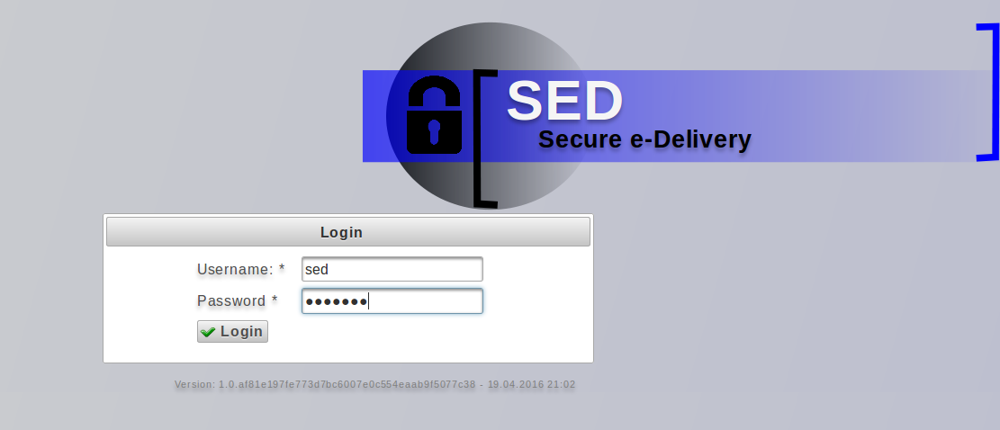
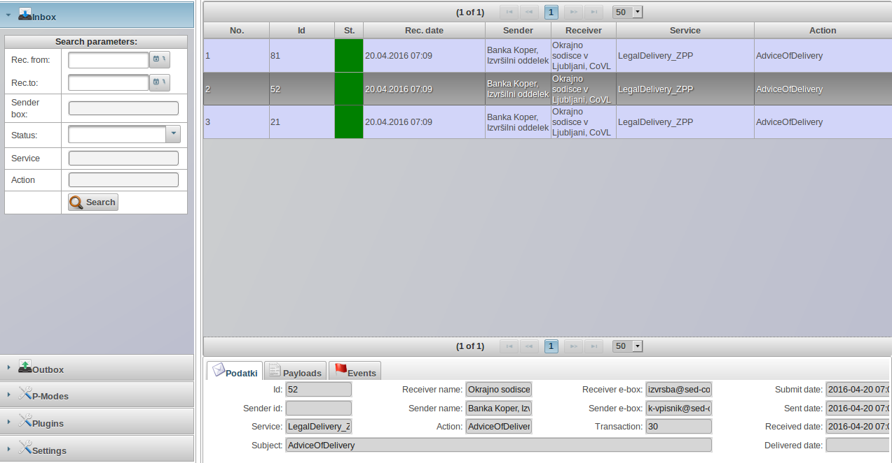
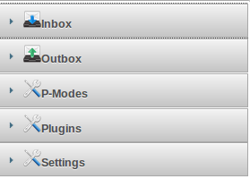

Aplikacija ebms-sed
Uporabniški vmesnik (GUI )aplikacija ebms-sed omogoča pregled dohodne in izhodne pošte ter spreminjanje nastavitev aplikacije ebms-sed. Za namene testiranja povezav je v aplikacijo doddana tudi možnost generiranja enostavnih sporočil.Prijava
Demo nastavitev ima izdelana dva uporabnika:| Vloga | Uporaniško ime | geslo |
|---|---|---|
| USER | sed | sed1234 |
| ADMIN | admin | admin1234 |

Delovno okolje
Delovno okolje je sestaljeno iz:- Orodna vrstica: gumbi za proženje akcij
- Izbira sklopa orodij (Izhodna pošta, dohodna pošta, pmode nastavitve, administracija vtičnikov (plugin) itd.)
- Glavna delovna površina (seznam pošiljk in podrobnosti pošiljk.)

Sklopi orodij
Sklopi orodij se nahajajo na levi strani zaslona. Ob izbiri sklopa orodij se prikaže seznam orodij :- Dohodna pošta
- Izhodna pošta
- PMode konfiguracija
- Vtičniki
- Nastavitve
